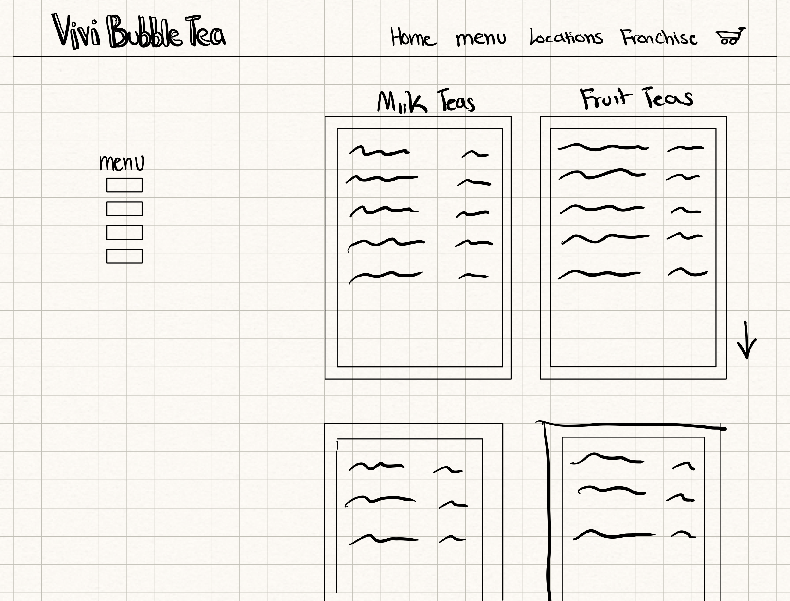
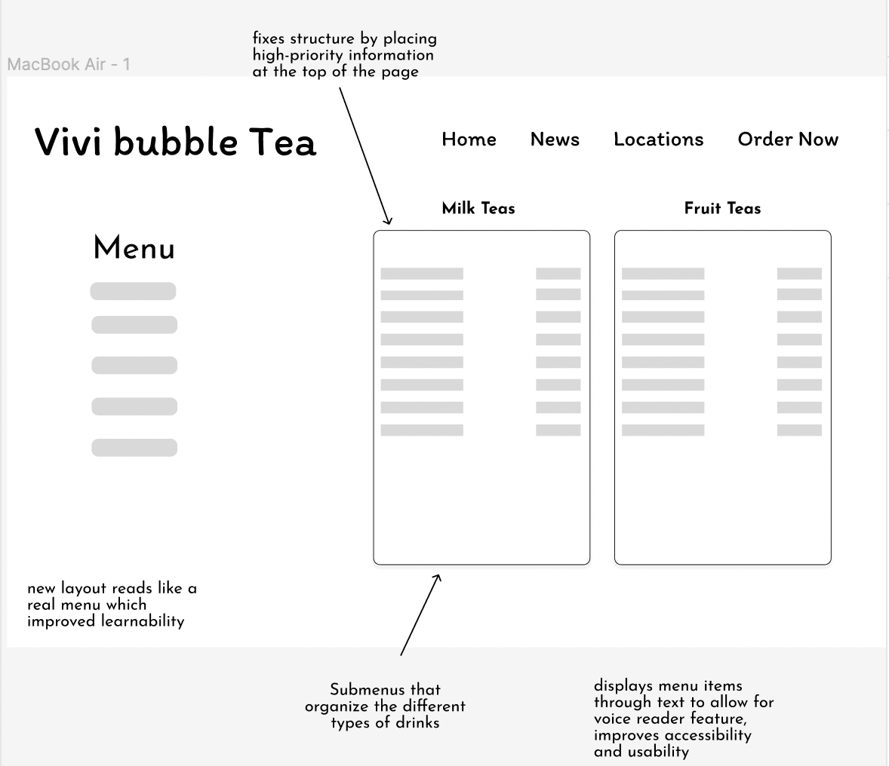
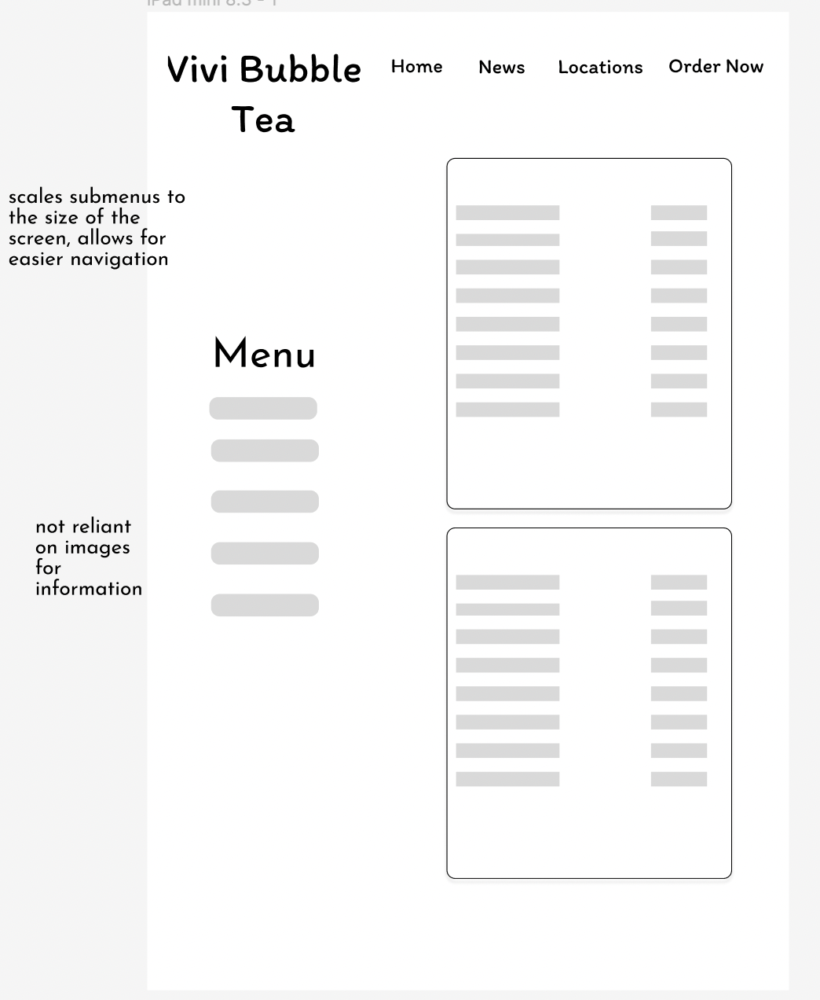
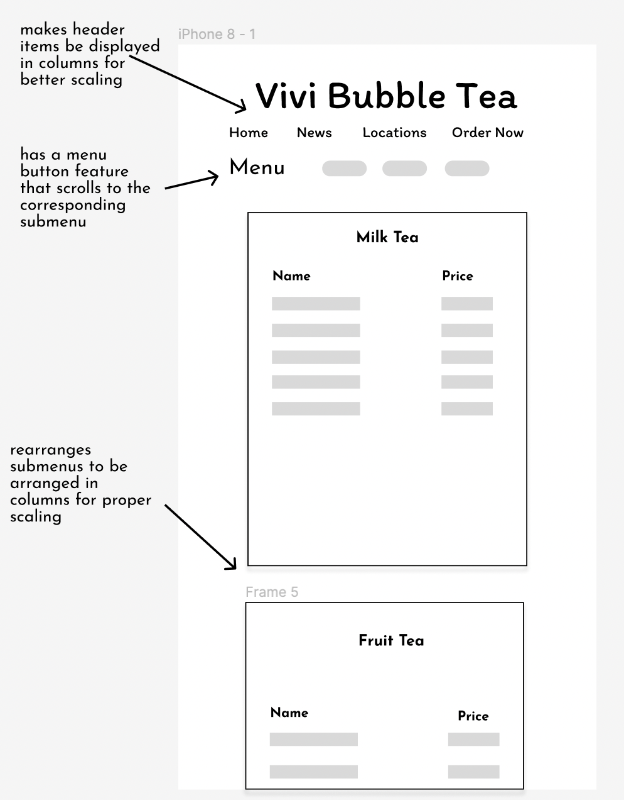
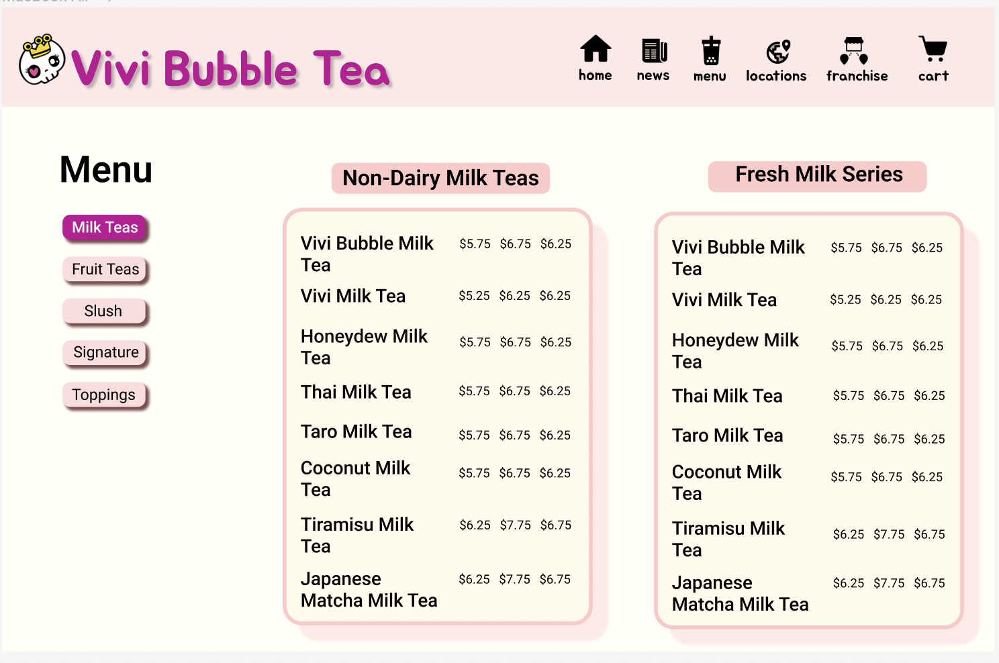
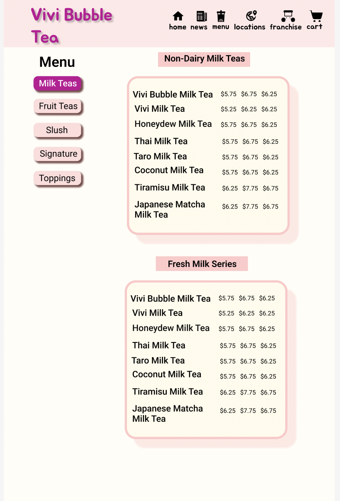
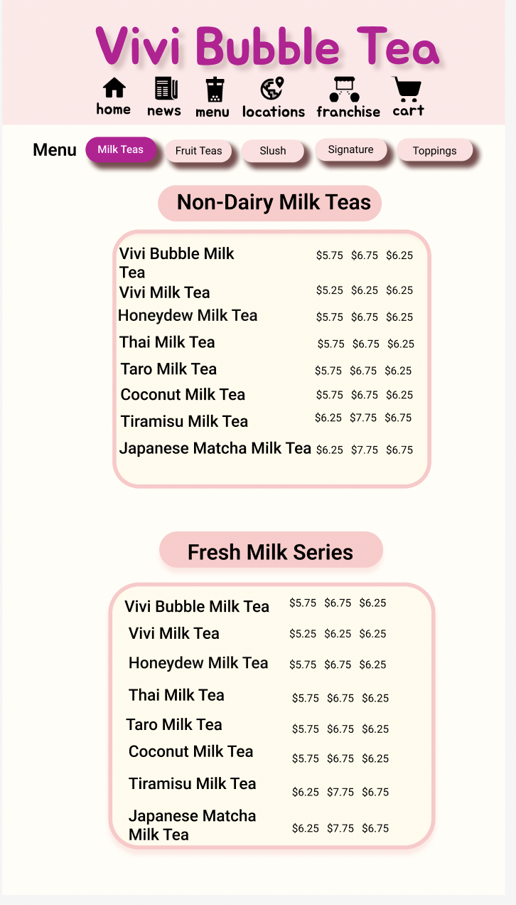
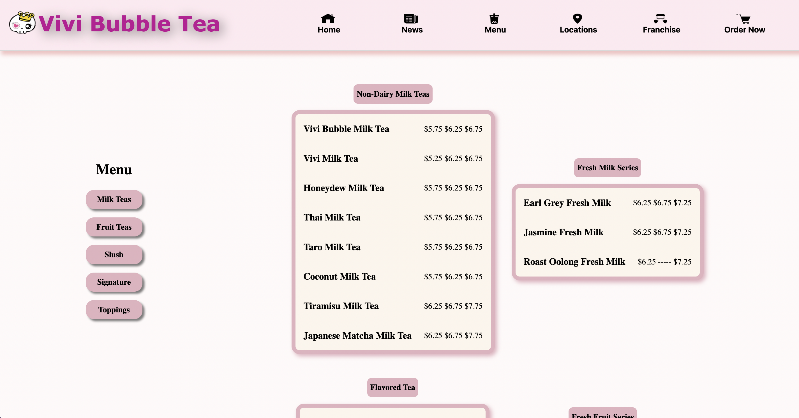
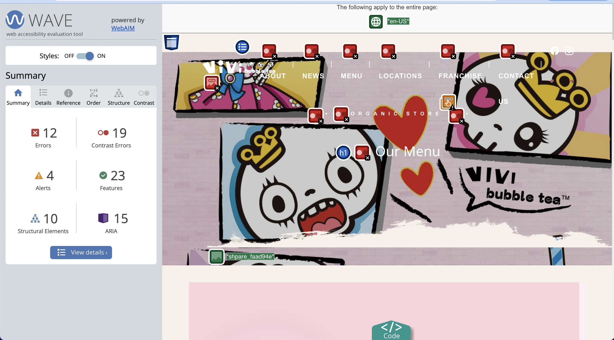
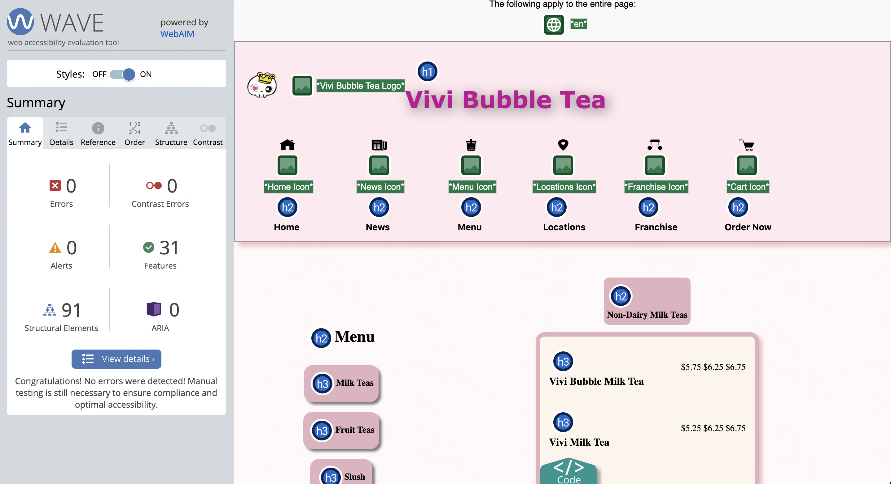

<!DOCTYPE html>
<html lang="en"></html>
<html>
  <head>
    <title>Sandra Sandoval Portfolio</title>
    <link rel="stylesheet" href="styles.css" />
    <link rel="stylesheet" href="redesign.css" />
  </head>
  <header>
    <div id="Title">
      <h1>Sandra Sandoval</h1>
    </div>
    <div id="header-container">
      <a href="index.html"><h2>Home</h2></a>
      <!-- <h2 class="current">Home</h2> -->
      <!-- <h2>Projects</h2> -->
      <a href="assets/Sandra_s_Resume (1) (1).pdf"><h2>Resume</h2></a>
      <!-- <h2>Resume</h2> -->
    </div>
  </header>

  <body>
    <div class="main-body">
      <div class="menu">
        <ul>
          <li><a href="#Overview" , id="menu-item">Overview</a></li>
          <li><a href="#Current" , id="menu-item">Current Design</a></li>
          <li><a href="#Problems" , id="menu-item">Problems</a></li>
          <li><a href="#Sketches" , id="menu-item">Sketches</a></li>
          <li><a href="#Lo-Fi" , id="menu-item">Lo-Fi</a></li>
          <li><a href="#style" , id="menu-item">Style Guide</a></li>
          <li><a href="#Hi-Fi" , id="menu-item">Hi-Fi</a></li>

          <li><a href="#Development" , id="menu-item">Development</a></li>
          <li><a href="#Analysis" , id="menu-item">Analysis</a></li>
          <li><a href="#Conclusion" , id="menu-item">Conclusion</a></li>
        </ul>
      </div>
      <div class="body-content">
        <h1 , id="Project-title">
          Responsive Redesign <i>Vivi Bubble Tea Menu </i>
        </h1>
        <div class="section" , id="Overview">
          <div class="subsection" , id="redesign-subsection">
            <!-- <h2>Overview</h2> -->
            <p>
              <b>Overview</b>
              <br />
              <br />
              When using the Vivi Bubble Tea Menu page, I noticed several issues
              that hinder the usability and accessibility of the webpage.
              Therefore, in an effort to make the menu more user-conscious, I
              have chosen to redesign Vivi Bubble Tea Menu Page in such a way
              that improves its poor performance when using the voice reader,
              fix its low-contrast issues, include alt descriptions on the
              images, and allow for responsiveness in different screen sizes.
            </p>
            
          </div>
        </div>
        <div class="section" , id="Current">
          <!-- <h2>Current Design</h2> -->
          <div class="subsection" , id="redesign-subsection">
            <p>
              <b>Current Design</b>
              <br />
              <br />
              The current menu page design is simple, yet lacks many factors
              that make up a good menu page: accessibility, usability, and
              effeciency.

              <br />
              A huge issue that the menu page faces in terms of accessibility is
              its use of unscalable images to display all menu items. This leads
              to issues with screen readers and thus, excludes specific users
              with accessibility needs.
              <br />
              <br />
              The menu webpage can be found at
              <a href="https://vivibubbletea.com/menu/"
                >Vivi Bubble Tea Menu Page</a
              >
            </p>
            
          </div>
        </div>
        <div class="section" , id="Problems">
          <div class="subsection" , id="redesign-subsection">
            <p>
              <b>Finding Problems</b>
              <br />
              <br />
              Prior to redesigning the menu page, I wanted to take a closer look
              at some of the issues that it contained to better address them in
              my design. The factors that I considered included:
            </p>
          </div>
          <div id="box-container">
            <div class="box">
              <h2 id="label">Learnability</h2>
              <li>
                Poor structure: The order of the images (with the special
                signature image directly above the menu image) may cause
                confusion for the user in which image they should be looking at
                to get information about the drinks, toppings, and prices
                offered by Vivi Bubble Tea.
              </li>
              <li>
                Layout: Navigation may not be very intuitive as the menu image
                is not the main or the largest image on the page.
              </li>
            </div>
            <div class="box">
              <h2 id="label">Memorability</h2>
              <li>
                Clutter: While the menu displayed on the web page serves as a
                good example of effective memorability due to its resemblance to
                real menus, the web page in its entirety does not as it contains
                several other redundant images that are displayed in a vertical
                manner, causing confusion.
              </li>
            </div>
            <div class="box">
              <h2 id="label">Effeciency</h2>
              <li>
                Clutter : The order of the images reduces the page’s efficiency
                as users must seek the menu image that contains information
                about drinks, prices, and toppings from the others displayed on
                the screen.
              </li>
              <li>
                Ordering: There is no way to select an item from the page to
                place an order. Instead, the customer must type their wanted
                order onto a different page. This reduces efficiency as a
                customer will have to find their desired drink from another menu
                on a different page.
              </li>
            </div>
          </div>
        </div>
        <div class="section" , id="Sketches">
          <h2>Sketches</h2>
          <div class="subsection" , id="skecthes-subsection">
            <h3>Initial Sketches</h3>
            <p>
              <!-- <b id="">Initial Sketches</b> -->
              <br />
              <!-- <br /> -->
              With those issues in mind, I sketched some initial ideas on how I
              would address these issues. These are 9 ideas that I came up with
              in 9 minutes.
            </p>
            
          </div>
          <div class="subsection" , id="skecthes-subsection">
            <h3>Final Sketch</h3>
            <p>
              <!-- <b>Final Sketch</b> -->
              <br />
              <!-- <br /> -->
              From my initial sketches, I drafted a final sketch for my redesign
              of the Vivi Bubble Tea Menu Page. I incorporated some elements
              from my initial sketches.
            </p>
            
          </div>
        </div>
        <div class="section" , id="Lo-Fi">
          <div class="subsection" , id="redesign-subsection">
            <p>
              <b> Lo-fi Wireframe </b>
              <br />
              <br />
              From my final sketch, I designed a lo-fi wireframe for three
              different device sizes: Laptop, iPad, iPhone. This showcases the
              way in which I plan to make my deisgn responsive on all devices.
            </p>
          </div>
          <div class="img-container">
            
            
            
          </div>
        </div>
        <div class="section" , id="style">
          <div class="subsection" , id="redesign-subsection">
            <p>
              <b>Style Guide</b>
              <br />
              <br />
              To ensure consistency in my redesign of the Vivi Bubble Tea Menu
              page, I have created a Style Guide.
              <br />
              <br />
              This style guide consists of the logos, fonts, colors, drop shadow
              information, headers, and label information that is to be used for
              redesigning the page,
            </p>
            
          </div>
        </div>
        <!-- <div class="section">
          <div class="subsection" , id="redesign-subsection">
            <p>
              <b>Hi-Fi Wireframes</b>
              <br />
              Using my style guide and previously created lo-fi wireframes, I
              developed hi-fi wireframes for three different device types.
            </p>
          </div>
          <div class="img-container">
            
            
            
          </div>
        </div> -->
        <div class="section" , id="Hi-Fi">
          <div class="subsection" , id="redesign-subsection">
            <p>
              <b> Hi-fi Wireframe </b>
              <br />
              <br />
              Using my style guide and previously created lo-fi wireframes, I
              developed hi-fi wireframes for three different device types:
              desktop, laptop, and phone.
            </p>
          </div>
          <div class="img-container">
            
            
            
          </div>
        </div>
        <div class="section" , id="Development">
          <!-- <h2>Development</h2> -->
          <div class="subsection" , id="development-subsection">
            <p>
              <b> Development </b>
              <br />
              <br />

              I have developed a redesigned page for Vivi Bubble Tea's menu to
              address the issues that I discussed previously. Using my Hi-Fi
              design and style guide, I created an html/css website to allow for
              improved learnability, memorability, and efficiency.
              <br />
              <br />

              Through media queries, I ensured that my design is accessible
              through every device.I tested my website's efficiency and
              accessibility through WebAIM, screen readers, google translate,
              and different zoom levels.
              <br />
              <br />

              I ensured that the top-priority information is at the top of the
              page by implementing a scrolling menu. The photo gallery from the
              original design is placed at the bottom of the page. All these
              images contain alt labels for screen reader accessibility.
              <br />
              <br />
              My redesign can be accessed at
              <a
                href="https://sandra-sandoval.github.io/cs1300-writeups/redesign-development/"
                >Vivi Bubble Tea Menu Redesign</a
              >
              <br />
              <br />
            </p>
            <div class="img-container" , id="final">
              
            </div>
          </div>
        </div>
        <div class="section" , id="Analysis">
          <div class="subsection" , id="redesign-subsection">
            <p>
              <b>Development Analysis</b>
              <br />
              <br />

              Though I specifically had usability and accessibility issues in
              mind when developming my redesign, its effectiveness of mitigating
              these issues are better represented by its performance on the
              WebAIM report and on multiple screen sizes.
              <br />
              <br />
              As we can see from the below comparison, the current design's
              WebAIM report showed several contrast errors and missing Aria
              labels. On the other hand, the new design's WebAIM report showed
              no outstanding errors as there is great contrast and needed
              labels.
            </p>
          </div>
          <div class="img-container">
            <div class="img-card">
              <b id="img-label">Current Vivi Bubble Tea WebAIM report</b>
              <br />
              
            </div>
            <div class="img-card">
              <b id="img-label">New Design WebAIM report</b>
              <br />
              
            </div>
          </div>
          <!-- <div class="subsection" , id="redesign-subsection">
            <p>
              As we can see from this comparison, the current design's WebAIM
              report showed several contrast errors and missing Aria labels. On
              the other hand, the new design's WebAIM report showed no
              outstanding errors as there is great contrast and needed labels.
            </p>
          </div> -->
        </div>
        <div class="section" , id="Conclusion">
          <div class="subsection" , id="redesign-subsection">
            <p>
              <b>Conclusion</b>
              <br />
              <br />
              Through the process of first identifying accessibility and
              usability issues through the usage of screen readers, tests on
              different devices, WebAIM, etc. on the Vivi Bubble Tea Menu page,
              I was able to create a more effecient and accessible webpage that
              attempts to address and mitigate the previous mentioned issues.
            </p>
          </div>
        </div>
      </div>
    </div>
  </body>
</html>
